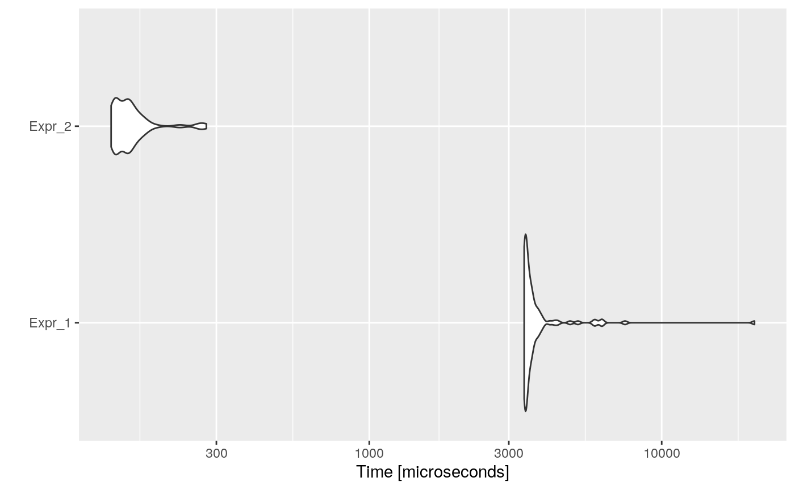

Constant propagation is the process of substituting the values of known constants in expressions. Constant propagation eliminates cases in which values are copied from one location or variable to another, in order to simply assign their value to another variable.
For example, consider the following code:
Here, x is assigned a constant, and thus, can be propagated (three times). Propagating yields:
Constant propagation enables the code to assign static values, which is faster than looking up and copying the value of a variable, and also saves time by eliminating assigning a value to a variable that is itself subsequently used only to propagate that value throughout the code. In some cases, copy propagation itself may not provide direct optimizations, but simply facilitates other transformations, such as constant folding, code motion, and dead code elimination.
A simple example would be a code that converts the unit of many temporary samples, from hours to miliseconds miliseconds <- 1000 * 60 * 60 * hours.
code <- paste(
"n <- 1000",
"hours_vector <- runif(n, 0, 24)",
"ms_vector <- numeric(n)",
"hs_to_mins <- 60",
"mins_to_secs <- 60",
"secs_to_ms <- 1000",
"# of course it would be much efficient to do vectorized operations xP",
"for (i in 1:n) {",
" ms_vector[i] <- secs_to_ms * mins_to_secs * hs_to_mins * hours_vector[i]",
"}",
sep = "\n"
)
cat(code)## n <- 1000
## hours_vector <- runif(n, 0, 24)
## ms_vector <- numeric(n)
## hs_to_mins <- 60
## mins_to_secs <- 60
## secs_to_ms <- 1000
## # of course it would be much efficient to do vectorized operations xP
## for (i in 1:n) {
## ms_vector[i] <- secs_to_ms * mins_to_secs * hs_to_mins * hours_vector[i]
## }Then, the automatically optimized code would be:
## n <- 1000
## hours_vector <- runif(n, 0, 24)
## ms_vector <- numeric(n)
## hs_to_mins <- 60
## mins_to_secs <- 60
## secs_to_ms <- 1000
## # of course it would be much efficient to do vectorized operations xP
## for (i in 1:n) {
## ms_vector[i] <- 1000 * 60 * 60 * hours_vector[i]
## }And if we measure the execution time of each one, and the speed-up:
bmark_res <- microbenchmark({
eval(parse(text = code))
}, {
eval(parse(text = opt_code))
})
autoplot(bmark_res)
## Min. 1st Qu. Median Mean 3rd Qu. Max.
## Expr_2 28.44638 28.71861 25.56709 29.57331 27.04842 73.10419The opt_constant_propagation optimizer analyzes the code from top to bottom. As it goes through the code, it performs two tasks:
Saves, in the values vector, those variables that are assigned a constant value. I.e., if x <- -3, then values$x <- -3.
Each variable that is assigned an expression that includes a variable present in values is given the corresponding constant value. I.e., y <- 7 * x + z is transformed to y <- 7 * -3 + z.
Depending on what expression it finds, it applies one of the following criteria:
VAR <- CONST
If it is an assignment of a constant value: then it keeps the same expression, and saves VAR = CONST in values.
This criteria also includes, multi-assign ( VAR <- VAR <- CONST ).
VAR * CONST + VAR
If it is only operators, variables, constants, and precedence operators: then it will check if any of the variables is stored in values vector, and would replace them in the expression. It will return the modified expression.
FUN({FUN_PARAMS})
If it is a function call, and opt_constant_propagation’s in_fun_call parameter is set to TRUE: then it will try to constant propagate in {FUN_PARAMS}. Consider the case that the function call is seq_len(x+30), it could be replaced by seq_len(-3+30).
Then, it empties the values vector ( values <- c() ). It should be noted that in R, calling a function can modify the current environment, being the simplest example rm(list = ls()), or assign("x", 4).
LOOP (COND) { BODY }
If it is a loop ( repeat, while, or for ): it will get which variables are being assigned in the loop and remove them from values, and then propagate in COND and BODY.
In-loop assigned variables are removed from values as, if not, it would try to propagate them, and these variables might change in next execution of BODY. For instance:
Would try to propagate to:
which is not equivalent.
IF (COND) { BODY } ELSE { BODY }
If it is an if: it will propagate values in COND and BODY, then it will get which variables are being assigned in the if/else BODY and remove them from values.
In-loop assigned variables are removed from values, as it is possible that the BODY is never executed (FALSE condition), and thus, these variables would not be updated or assigned.
VAR <- EXPR
If it is an assignment (of a non constant value): it will keep VAR <- and try to propagate on EXPR. Moreover, it will remove VAR from values as it is assigned a non-constant value.
Recognize functions that modify the environment?
When opt_constant_propagation finds a function call, it deletes the previously found constant-assigned values. This is mainly done to avoid having
Propagated to
In R we can list which base functions modify the environment, for example, assign, rm, etc. However, this would not be a solution, as we can define new functions that wrap the base ones, for instance:
A possible solution would be to let the user identify which functions edit the environment.
in a roxygen2 way:
or
by parameter: